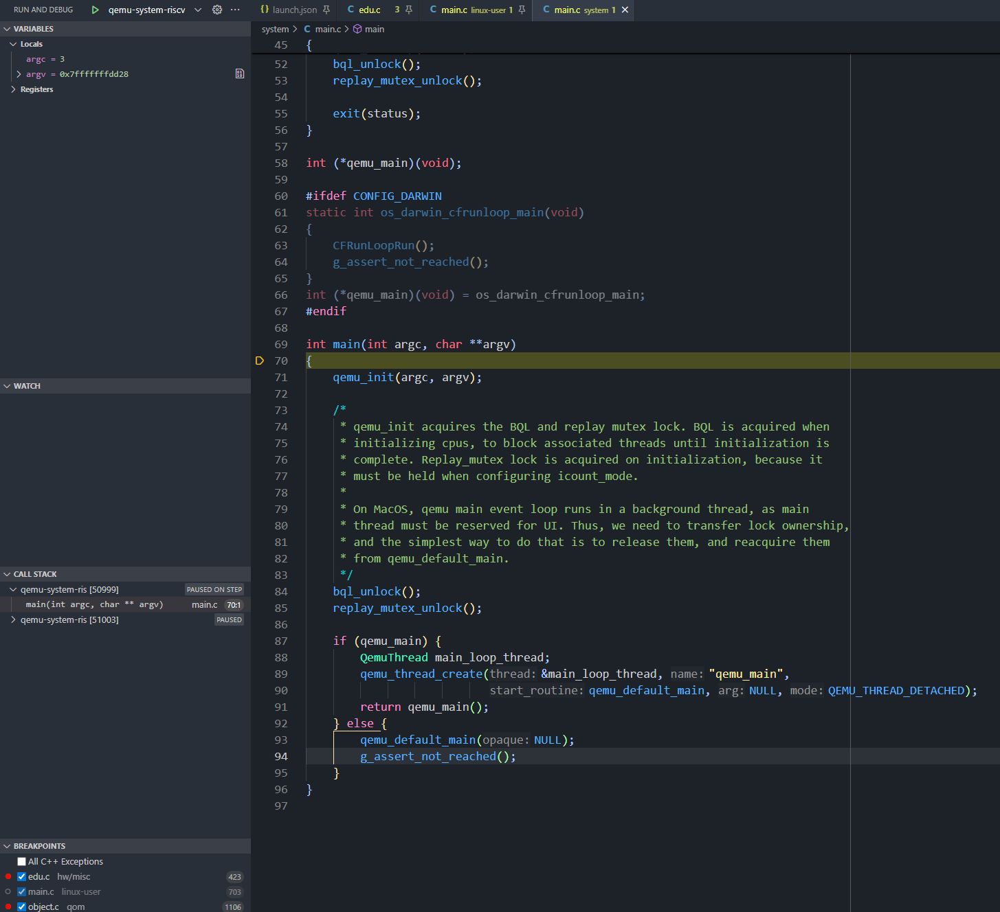

QEMU 常用调试方法¶
主要贡献者
- 作者：@zevorn
QEMU 版本
本文基于 QEMU v10.2.0（tag: v10.2.0，commit: 75eb8d57c6b9）。
下面介绍几种常用的 QEMU 调试手段，或调试 QEMU，或调试客户机系统。
概览
- 使用 GDB 本地调试 QEMU 源码与启动流程
- 通过 gdbstub 远程调试客户机程序
- 了解 QEMU 日志系统与常用 log 选项
- 使用 trace 事件跟踪运行行为
GDB 调试 QEMU¶
在学习阶段，查看和分析 QEMU 的源码是必不可少的一个环节。既可以通过 GDB 命令行去调试，可以通过 vscode 或者 IDE 进行可视化调试。下面介绍通过 vscode 可视化调试的方法。
值得庆幸的是，调试 QEMU 源码并不需要类似于调试内核一样，需要先启动后通过 gdb attach，QEMU 本身是能够直接在本地进行执行的，所以只需要配置好 vscode 的插件配置。
额外提示
目前主流还是通过 vscode 进行图形化地调试各种大型项目，至于 CLion 这种 IDE 笔者认为仅需要配置要调试参数即可(因为 CLion 可以自行根据 meson 和 CMakeLists.txt 进行捕获可执行文件)
在 vscode 上，调试需要的插件为C/C++，至于其他插件，请根据读者自身的喜好进行下载。
下载就绪后，读者需要编译出二进制文件 (qemu-[arch]/qemu-system-[arch])，然后根据如下配置进行修改 (.vscode/launch.json)
{
// Use IntelliSense to learn about possible attributes.
// Hover to view descriptions of existing attributes.
// For more information, visit: https://go.microsoft.com/fwlink/?linkid=830387
"version": "0.2.0",
"configurations": [
{
"name": "qemu-system-riscv",
"type": "cppdbg",
"request": "launch",
"program": "${workspaceFolder}/build/qemu-system-riscv64",
"args": [
"-device", "edu,id=edu1"
],
"stopAtEntry": true,
"cwd": "${fileDirname}",
"environment": [],
"externalConsole": false,
"MIMode": "gdb",
"setupCommands": [
{
"description": "Enable pretty-printing for gdb",
"text": "-enable-pretty-printing",
"ignoreFailures": true
},
{
"description": "Set Disassembly Flavor to Intel",
"text": "-gdb-set disassembly-flavor intel",
"ignoreFailures": true
}
]
},
]
}
读者只需要修改program在读者本机的确切地址即可，至于name则可以随自身喜好进行设置。然后，就可以直接开始调试 (stopAtEntry=true会使得调试器停顿在入口处)。

GDB 远程调试客户机¶
前面介绍了如何用 GDB 调试 QEMU 本身的源码。但有时候我们需要调试的不是 QEMU，而是运行在 QEMU 中的客户机程序（如固件、内核），这就需要使用 GDB 远程调试。
QEMU 支持远程调试 user 模式和 system 模式下的客户机程序。QEMU 内置了一个 gdbserver 可以对客户机处理器进行控制，也叫 gdbstub。 用户可以通过任意 gdb client 连接到 QEMU 的 gdbstub。
下面给出具体操作命令：
-
-s：启动 gdbstub，并把端口号设置为 1234 -
-S：让 QEMU 停在客户机的第一条指令，等待 gdb client 连接。
如果要指定调试的端口号，可以使用如下命令：
然后使用对应架构的 gdb 连接 QEMU gdbstub：
QEMU 日志系统¶
GDB 适合交互式地逐步排查问题，但当需要大量批量信息（如完整指令流、中断记录）时，QEMU 的日志系统更加高效。
QEMU 有一个灵活的日志系统，可以很方便地观测客户机的各种状态（指令流、中断、异常、系统调用）。
下面给出基本命令格式：
-
-d：指定 log 的类型，可以多个，使用,分割 -
-D：指定输出 log 的文件路径，如果不加这个参数，默认输出到命令行终端
你可以使用如下命令查看当前支持的 log 的类型：
$QEMU -d ?
Log items (comma separated):
out_asm show generated host assembly code for each compiled TB (Translation Block, TCG 的基本翻译单元，通常对应一个基本块)
in_asm show target assembly code for each compiled TB
op show micro ops for each compiled TB (TCG, Tiny Code Generator, QEMU 的动态二进制翻译引擎)
op_opt show micro ops after optimization
op_ind show micro ops before indirect lowering
op_plugin show micro ops before plugin injection
int show interrupts/exceptions in short format
exec show trace before each executed TB (lots of logs)
cpu show CPU registers before entering a TB (lots of logs)
fpu include FPU registers in the 'cpu' logging
mmu log MMU-related activities
pcall x86 only: show protected mode far calls/returns/exceptions
cpu_reset show CPU state before CPU resets
unimp log unimplemented functionality
guest_errors log when the guest OS does something invalid (eg accessing a
non-existent register)
page dump pages at beginning of user mode emulation
nochain do not chain compiled TBs so that "exec" and "cpu" show
complete traces
plugin output from TCG plugins
strace log every user-mode syscall, its input, and its result
tid open a separate log file per thread; filename must contain '%d'
vpu include VPU registers in the 'cpu' logging
invalid_mem log invalid memory accesses
trace:PATTERN enable trace events
Use "-d trace:help" to get a list of trace events.
我们列举一些常用的组合。
如果我们想观察 TCG 是如何翻译指令，可以使用如下命令：
如果我们想观察 CPU 的状态（寄存器值，中断/异常），可以使用下面的命令：
如果你想获取 CPU 精准执行的指令流，需要设置每个 TB 只包含一条指令，可以使用下面的命令：
QEMU 追踪事件¶
日志系统能够输出完整的指令流和 CPU 状态，但它面向的是客户机行为的全局记录，粒度较粗且输出量大。当你需要精确跟踪 QEMU 内部某个子系统的关键操作——比如某个设备寄存器被读写了多少次、DMA 传输何时触发——日志系统就显得不够灵活了。为此，QEMU 提供了另一套更轻量、更细粒度的调试机制：追踪事件（trace event）。
追踪事件（trace event）是 QEMU 预埋在源码关键路径上的探针点。开发者在源码中声明事件的名称、参数和格式字符串，编译后即可在运行时按需开启或关闭，只输出你关心的信息，而不会像日志那样产生大量无关输出。
QEMU 有一个很好用的调试工具 tracing，可以用来跟踪 QEMU 内部函数的执行情况，以及性能调优。
比如追踪客户机程序的访存情况，可以将 QEMU 的 memory_region 的读写记录打印出来，只要注册了相应的 trace-event。
我们先讨论一个最简单的方法，把 tracing 用起来。
Note
推荐阅读 QEMU 官方文档：docs/devel/tracing.rst
在 QEMU 的启动选项中，通过增加 trace 参数，来指明要追踪的事件，这里以追踪 memory region 的访存事件为例：
$ $QEMU $QEMU_ARGS -M virt --trace "memory_region_ops_*" # *号代表前面的字符作为匹配对象
...
719585@1608130130.441188:memory_region_ops_read cpu 0 mr 0x562fdfbb3820 addr 0x3cc value 0x67 size 1
719585@1608130130.441190:memory_region_ops_write cpu 0 mr 0x562fdfbd2f00 addr 0x3d4 value 0x70e size 2
我们可以在 QEMU 源码的 system/trace-events 文件中找到 mr 相关的 trace-event：
# memory.c
memory_region_ops_read(int cpu_index, void *mr, uint64_t addr, uint64_t value, unsigned size, const char *name) "cpu %d mr %p addr 0x%"PRIx64" value 0x%"PRIx64" size %u name '%s'"
memory_region_ops_write(int cpu_index, void *mr, uint64_t addr, uint64_t value, unsigned size, const char *name) "cpu %d mr %p addr 0x%"PRIx64" value 0x%"PRIx64" size %u name '%s'"
如果要启用多个 trace-event ，只需要在启动选项里追加--trace <name>。
为了避免参数冗长，可以将需要追踪的 trace-event 记录在一个配置文件，然后加载它：
echo "memory_region_ops_*" >/tmp/events
echo "kvm_*" >>/tmp/events
$QEMU $QEMU_ARGS -M --trace events=/tmp/events ...
同时 tracing 也支持输出到文件，我们修改上面的 QEMU 命令：
如果不想在 QEMU 启动选项里开启，我们也可以在 QEMU 的 monitor 中动态开启，这样更灵活一些，操作如下：
$ $QEMU $QEMU_ARGS -M virt -monitor stdio -S -display none
(qemu) trace-event memory_region_ops_read on
(qemu) c
...
memory_region_ops_write cpu 0 mr 0x55a289a24d80 addr 0x10000000 value 0x78 size 1 name 'serial'
在 monitor 中使用 tracing 还有一个好处，你可以通过 tab 按键来补全命令，不必辛苦手动从源码中查阅每个组件支持的 trace-event。
Note
也可以使用info trace-events命令查询支持的 trace 事件。
或者使用trace-file命令将追踪日志输出到文件。
tracing 支持多种 backend，默认使用 QEMU 的 log 作为后端，简单调试的场景，不必手动构建 QEMU，可以直接使用 Linux 或者 windows 软件仓提供的 QEMU。
在 QEMU 源码的每一级目录，都可以添加 trace-events 文件，只需要在顶层 meson.build 目录里声明它的相对路径，就可以往里面添加自定义的 trace-event：
在 QEMU 构建过程中，每个 trace-events 文件将由 tracetool 脚本处理，自动在
- trace-<子目录名>.c
- trace-<subdir>.h
- trace-dtrace-<subdir>.h
- trace-dtrace-<subdir>.dtrace
- trace-dtrace-<subdir>.o
- trace-ust-<subdir>.h
此处
例如，accel/kvm 变为 accel_kvm，最终生成的 trace-
各个 trace-events 文件会被合并成一个 trace-events-all 文件，同样生成在
该文件也会被安装到 /usr/share/qemu 目录下。这个合并后的文件将由 QEMU 提供的 simpletrace.py 脚本用于后续分析简单跟踪数据格式的跟踪记录。
源码树中的源文件，不会直接包含构建目录下生成的 trace 源码文件，而是通过 #include 引用本地的 trace.h 文件，且不带任何子目录路径前缀。
例如 io/channel-buffer.c 会这样引用：
另外，我们必须手动创建 io/trace.h 文件，
并在其中包含对应的 trace/trace-
Tip
值得注意的是：虽然可以从源文件所在子目录之外引入 trace.h，但通常不建议这样做。
强烈建议所有 trace-event，都在使用它们的子目录中直接声明。
唯一的例外是，在顶级目录的 trace-events 文件中定义了一些共享跟踪事件。
顶级目录生成的跟踪文件会带有 trace/trace-root 前缀，而不仅仅是 trace ，这是为了避免当前目录中的 trace.h ，与顶级目录中的文件产生歧义。
添加新的 trace-event 只需要两步，首先在相应目录的 trace-events 文件中声明 trace-event，然后在需要调试的目标源码内，添加这个事件的函数调用。
以追踪 QEMU 内存的申请释放为例，trace-event 的格式如下：
每个事件声明将以事件名称开头，然后是参数，最后是一个用于美观打印的格式字符串。
格式字符串应反映跟踪事件中定义的类型。tracing 只支持基础标量类型（char、int、long），不支持浮点类型（float、double）。
特别注意对 int64_t 和 uint64_t 类型分别使用 PRId64 和 PRIu64，这确保了在 32 位和 64 位平台之间的可移植性。
格式字符串不得以换行符结尾。由后端负责调整行尾以实现正确的日志记录。
定义好 trace-event，直接从目标源码中调用它，示例如下：
#include "trace.h" /* needed for trace event prototype */
void *qemu_vmalloc(size_t size)
{
void *ptr;
size_t align = QEMU_VMALLOC_ALIGN;
if (size < align) {
align = getpagesize();
}
ptr = qemu_memalign(align, size);
/* 插入 trace-event，格式为：trace_<event-name> */
trace_qemu_vmalloc(size, ptr);
return ptr;
}
另外，若一个函数中存在多个跟踪事件，应在名称末尾添加唯一标识符加以区分。
某些情况下可能需要执行相对复杂的计算来生成仅用作跟踪函数参数的值。
此时可以使用下面这个函数来保护这类计算逻辑：
当事件在编译时或运行时被禁用时，相关计算将被跳过。若事件在编译阶段已禁用，该检查将不会产生任何性能开销。
示例代码如下。
#include "trace.h" /* needed for trace event prototype */
void *qemu_vmalloc(size_t size)
{
void *ptr;
size_t align = QEMU_VMALLOC_ALIGN;
if (size < align) {
align = getpagesize();
}
ptr = qemu_memalign(align, size);
if (trace_event_get_state_backends(TRACE_QEMU_VMALLOC)) {
void *complex;
/* some complex computations to produce the 'complex' value */
trace_qemu_vmalloc(size, ptr, complex);
}
return ptr;
}
Note
以下几种情况，非常适合使用 tracing 调试：
1. 跟踪代码中的状态变化。代码中的关键点通常涉及状态变更，如启动、停止、分配、释放等。状态变化是理想的跟踪事件，因为它们能帮助理解系统执行过程。
2. 跟踪客户机操作。客户机的 I/O 访问（如读取设备寄存器）是良好的跟踪事件，可用于分析客户机交互行为。
3. 使用关联字段以便理解单行跟踪输出的上下文。例如，跟踪 malloc 返回的指针及其作为 free 参数的使用情况，这样就能匹配 malloc 和 free 操作。缺乏上下文的跟踪事件实用价值有限。
QEMU 的 tracing 采用前后端分离的设计，支持多种后端，除了上文提到的 log，还支持更轻量的 simple，以及 ftrace 和 dtrace。
我们还可以通过 tracetool 脚本添加更多 backend 支持。
启用不同的 backend，可以使用以下 QEMU 编译命令：
通过运行 ./configure --help 查看支持的所有后端，若未显式地选择后端，配置将默认使用 log 后端。
我们以 simple 后端为例，该后端通过独立线程，将二进制追踪日志写入文件，相比 log 后端具有更低的开销。
同时 QEMU 源码仓中提供了离线追踪文件分析的 python 脚本。虽然功能可能不如特定平台或第三方追踪后端强大，但具有可移植性且无需特殊库依赖。
使用 simpletrace.py 脚本进行格式化，需要用到 trace-events-all 文件和二进制跟踪文件：
必须确保使用的 trace-events-all 文件，与构建 QEMU 时的生成的相同，否则跟踪事件声明可能已发生变化，导致输出不一致。